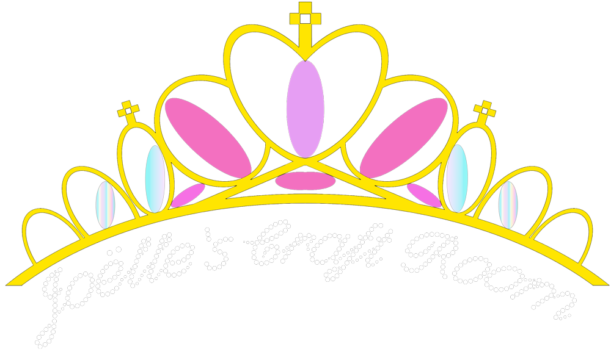
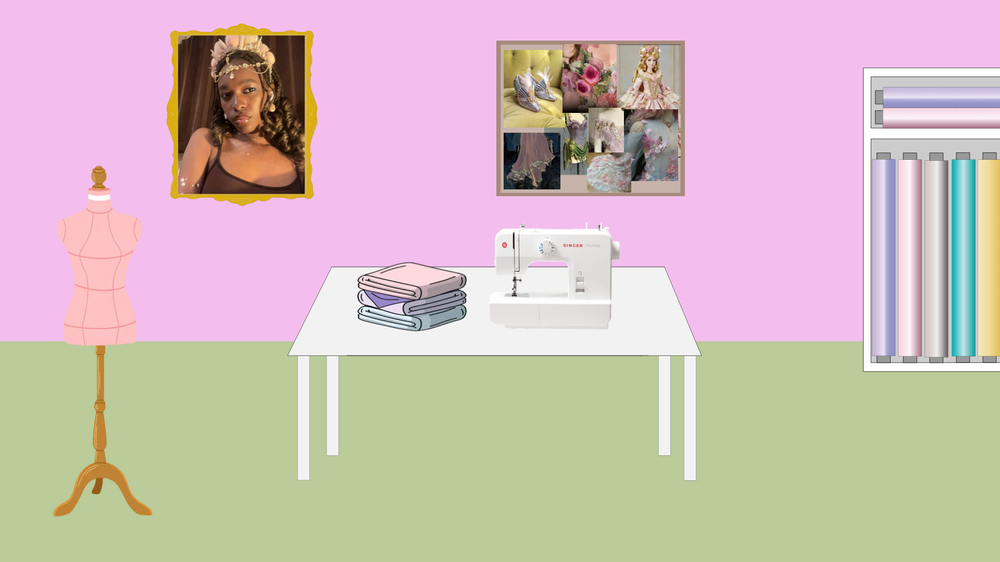

Deze website maakt gebruik van functionele cookies. Deze cookies zijn noodzakelijk om bepaalde onderdelen van de website goed te laten werken. Deze website is gehost via GitHub Pages. Klik hier voor meer informatie over het cookiebeleid en privacybeleid van GitHub.